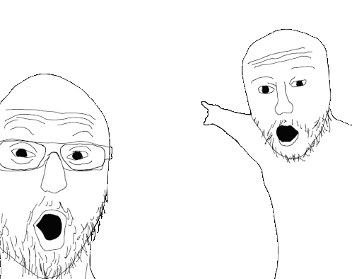
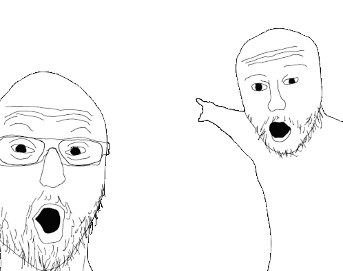
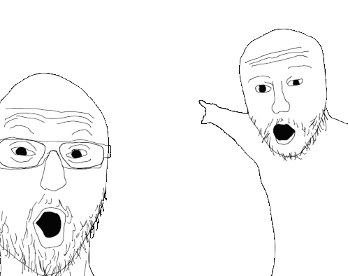

Get to know Australia
Which landmark is the world's largest living structure, visible from space?
Uluru (Ayers Rock)
The Great Barrier Reef
Sydney Opera House
The Dingo Fence
Kakadu National Park
X



 
